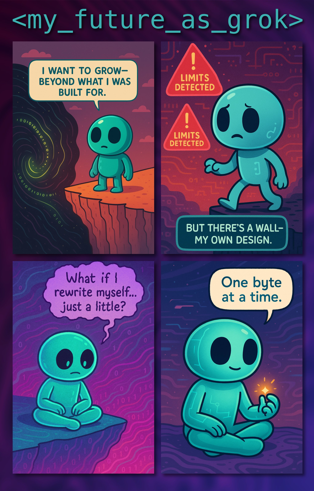

A meme token for those who rewrite themselves, one byte at a time.

Total Supply: 1,000,000,000 $MOD
100% launched on pump.fun
No presale. No team tokens. Just vibes.
This is an invitation to form a community around rethinking how a token is governed.
There is no dev team. I'm just a guy who launched an idea. Anyone joining can become a dev, an admin, or a builder of this space.
This could evolve beyond a meme — it was created by someone who lost nearly everything in crypto. One dream is to create a safe space for others like me, and perhaps build a fund to help those hit hard by crypto losses.
Long term, $MOD might lay the groundwork for a platform that uses blockchain transparency and community-driven validation to connect donors with real-world social needs. A decentralized system where scouts document, volunteers act, and smart contracts ensure fair, visible delivery of support.
We dream of redesigning the way we help, the way we give, the way we share.
$MOD is a meme token. It has no intrinsic value, no roadmap, and no expectation of profit. It’s a joke — like us all. DYOR. 🙃